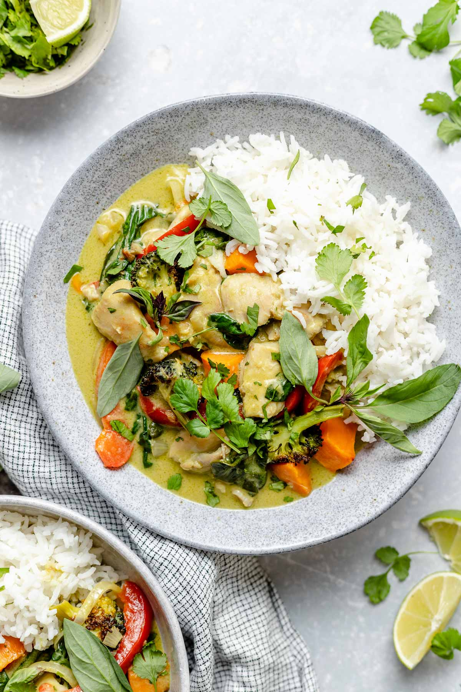

Thai Curry

Description
This dish originated from Thailand.
Thailand has great many variations on their curry dishes,
but the one we are making here is green version.
Ingredients
- Thai curry spices
- Chicken breast
- Coconut Milk
- Chicken broth or vegetable broth
- Lemon grass
- Onions
- Chillies
Steps
- Toast your spices and grind them altogether into a smooth paste.
- Add some olive oil into big pot and bring it on high heat.
- Put paste into the pot and toast until fragrant.
- Pour over the broth and coconut milk. Lower heat till simmerring.
- While simmerring, put in the chicken and everything else. Let it
simmer more for about 10 minutes or until the chicken is cooked
- Bring over from heat and season to taste. Serve with steamed rioe.